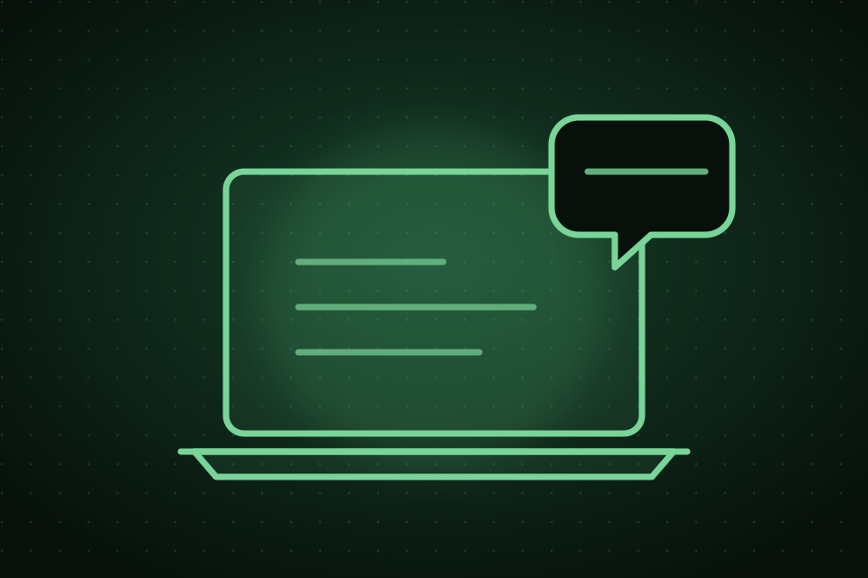

Atendimento
Solicitar atendimento
Peça suporte para seu desktop ou notebook diretamente pelo portal, sem login e sem CPF. É rápido, prático e seguro.

Tecnologia que resolve,
Para você seguir em frente.
Para você seguir em frente.
Selecione o tipo de solicitaçãoAtendimento e orçamento usam as mesmas opções de serviço.No orçamento, a PD analisa as informações e retorna pelo WhatsApp antes de qualquer confirmação.
1Equipamento
2Problema
3Atendimento
4Seus dados
5Confirmação
Tipo de solicitaçãoAtendimento
1
Qual é o seu equipamento?
Selecione o tipo de equipamento que precisa de suporte.
2
Qual é o problema ou serviço necessário?
Escolha a opção que mais se aproxima do que você precisa. Se não souber, use “outro / não sei”.
3
Descreva o problema
Conte com mais detalhes o que está acontecendo. Quanto mais informações, melhor poderemos te ajudar.
0/500
i
Atendimento personalizado, com foco em qualidade, clareza e confiança.
✓
Após o envio, entraremos em contato pelo WhatsApp para confirmar o agendamento.
O envio da solicitação não confirma automaticamente o atendimento. Aguarde o retorno da PD.
WhatsApp
Retorno direto
Retorno direto